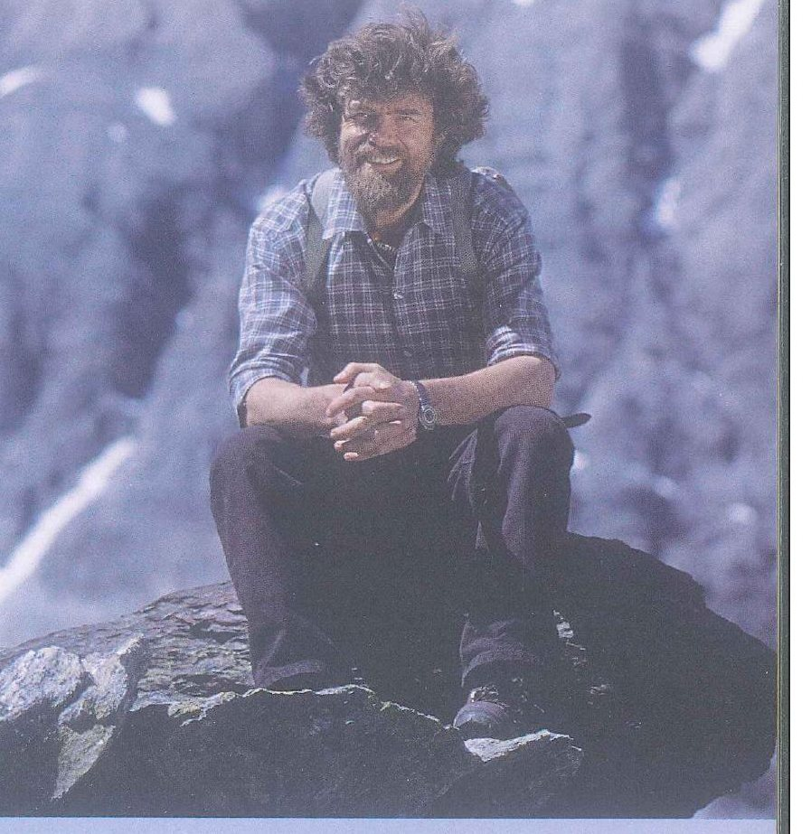
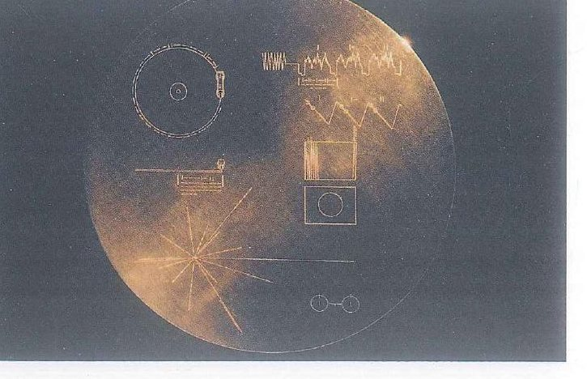

Aims of the lesson & Lead-in
Aims of the lesson
By the end of the lesson, you will be able to:
- Name the words and chunks of the 4 groups: life stories, mountains and adventure, space exploration, messages and records.
- Explain where the quotation marks, the comma and the full stop go in direct speech, and why we write said Kammerlander but not said he.
- Recall Voyager 1’s mission and what the Golden Record carries: photos, sounds, music and greetings.
- Use was born, the past simple, the present perfect and famous for + -ing in the right places in a life story.
- Analyse The world’s greatest mountaineer: which paragraph gives Messner’s birth, his fame, his own words, other people’s views and his life now.
- Find numbers, facts and reasons in the two Golden Record videos and in the PET Reading and Listening extras.
- Compose a short spoken portrait of someone you admire, quoting their words in correct direct speech.
- Evaluate a documentary you have seen (Topic 9) or an important event in Vietnam’s history (Topic 4) with the 7-step frame.
- Write a single paragraph on the benefits and drawbacks of exploring space, ending with a clear judgement.
Lead-in 1 · A climber, a spacecraft and a golden record — look, guess and react

- Question 1‘Who do you think this man is? Look at his clothes and the place for clues.’
- Question 2‘Climbers like him go above 8,000 metres, sometimes with no oxygen tanks. What happens to the human body up there?’
- Question 3‘Would you follow him up a dangerous peak if he invited you? Why or why not?’

- Question 1‘Can you name the striped planet? How big is it next to Earth, do you think?’
- Question 2‘Why do scientists send machines, not people, this far from home?’
- Question 3‘What connects a mountaineer and a spacecraft? Find two things they have in common.’

- Question 1‘What do you think this rocket is carrying, and where is it going?’
- Question 2‘How would you feel standing a few kilometres away at the moment it takes off?’
- Question 3‘Have you ever watched a launch, live or online? Which part did you find most exciting?’

- Question 1‘Read the label. Whose sounds do you think are on this record?’
- Question 2‘Why would anyone fix a record to a spacecraft instead of a book or a letter?’
- Question 3‘Records, cassettes, CDs, memory sticks: which of these does your family still keep at home?’

- Question 1‘What do you think these lines and circles are trying to explain?’
- Question 2‘Why might the makers have used drawings here and no words at all?’
- Question 3‘If you had to explain your life without words, which three pictures would you draw?’

- Question 1‘Where was the camera when this picture was taken, do you think?’
- Question 2‘Which parts of the planet can you recognise: oceans, clouds, ice or land?’
- Question 3‘Would you go into space as a flight doctor? What would worry you most?’
- Question 1‘Which organ is this, and which of the vessels around it can you name?’
- Question 2‘The sound of a human heart went into space on the Golden Record. Why do you think the team chose it for other life forms?’
- Question 3‘If you could add one sound from a hospital to that message, which would you choose, and why?’
Lead-in 2 · Life stories, risks and messages — agree or disagree?
1 · You can learn more from a person’s life story than from a textbook.
Model answer
I agree, at least when it comes to remembering things. I’ve forgotten most of the dates in my history textbook, but I still remember my grandfather’s story about carrying wounded soldiers across a river at night. A real person’s choices stay with you much longer than a list of facts.
2 · A famous person’s childhood explains most of their success.
Model answer
I don’t think so. Plenty of people have a happy, comfortable childhood and never do anything special, and one of the best surgeons on my placement grew up selling vegetables at a market. Childhood can open a door, but it’s the hard work in your twenties that gets you through it.
3 · Climbing the world’s highest mountains is worth the risk.
Model answer
Not for me. On our field exercise last spring we only climbed about 1,500 metres, and two cadets still twisted their ankles and had to be helped down. I admire people like Messner, but I’d rather keep all ten toes.
4 · A message for other life forms should contain music, not words.
Model answer
Mostly, yes. Nobody out there will understand Vietnamese or English, but a rhythm might make sense to any creature that can hear. I’d still add one short spoken greeting, though, just to show them we can talk.
5 · Every school should teach the history of space exploration.
Model answer
Not every school, no. Our secondary school timetable was already packed, and I’d rather have had more first aid classes. A couple of lessons as part of physics would be enough, like the afternoon our teacher played the Moon landing on an old projector.
6 · Our phones keep a better record of our lives than any diary.
Model answer
I disagree. My phone has about eight thousand photos, but they show where I was, not what I was thinking. My mum has kept a diary since her first job on a children’s ward, and a single page of it tells you more than a whole album.
- I’m with you on that, because …
- That’s true for …, but not for …
- Speaking from my own training, …
- I’d go along with that, as long as …
- I’m not so sure about that, because …
Lead-in 3 · What goes into a biography?
SB p. 137 Ex 1 · Think of three pieces of information you would expect to find in a biography. Note them below and compare with a partner.
Model answer
- Birth date and place
- Major achievements
- Career highlights
- Also common: childhood and family, a turning point, the person’s own words, other people’s opinions, life today or legacy
Seven cards about Neil Armstrong: number them 1–7 in the order a biography tells them
1Neil Armstrong is famous for being the first person to walk on the Moon.
2He was born on 5 August 1930 near Wapakoneta, a small town in Ohio, in the United States.
3As a small boy, he went on his first plane ride with his father, and he got a student pilot’s licence on his sixteenth birthday, before he could even drive a car.
4After flying 78 combat missions for the US Navy in Korea, he became a test pilot, and in 1962 NASA chose him as an astronaut.
5In July 1969, as he stepped down from Apollo 11’s landing craft onto the Moon, he said, ‘That’s one small step for man, one giant leap for mankind.’
6‘Neil was among the greatest of American heroes,’ said President Barack Obama when Armstrong died in 2012.
7Today the Armstrong Air & Space Museum in his hometown tells his story; it opened exactly three years after the Moon landing.
Lead-in 4 · How many words do you already know in each of the 4 groups?
Which words do you need to tell someone’s life, from the day they were born to old age?
Picture a climb in the Himalayas: which words do you know for the people, the places and the dangers?
Which words can you use for rockets, planets and the people who explore beyond Earth?
How can people keep a voice, a song or a message for the future? List the words you know.